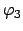
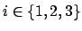

Next: 1 1D Sinusoidal motion Up: multicube-clawar Previous: 3 Configuration 1: Pitch-Pitch


Next: 1 1D
Sinusoidal motion Up: multicube-clawar
Previous: 3
Configuration 1: Pitch-Pitch
|
|
Figure:
Pitch-Yaw-Pitch (PYP) Configuration. a) A cad rendering
showing the three modules and its rotation angle ranges. The module
angles
 ,
,
 and
and
Three Y1 modules are employed in this configuration. The outermost
modules rotate in the pitch axis and the one at the center in the yaw
axis (Figure ).
Only one more module is added, but three new kind of gaits can be
realized: 2D sinusoidal movement, lateral rolling and lateral shift.
The same sinusoidal function is applied (equation
).
Only one more module is added, but three new kind of gaits can be
realized: 2D sinusoidal movement, lateral rolling and lateral shift.
The same sinusoidal function is applied (equation
 )
but in this case
)
but in this case

.
![\includegraphics[%scale=0.45]{eps/figur3.eps}](img29.png)